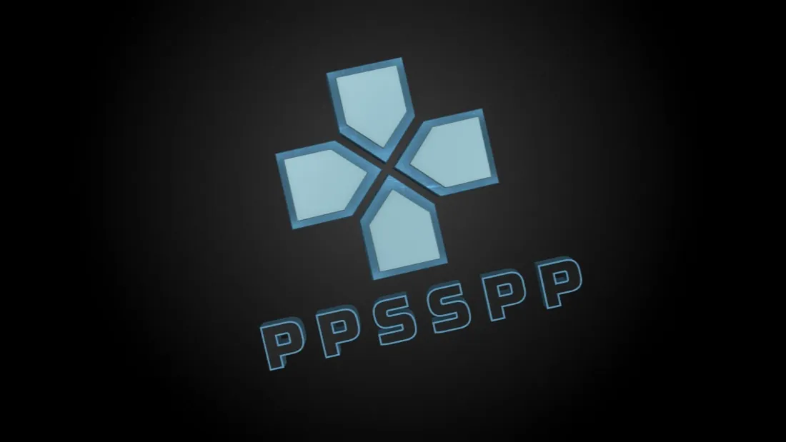
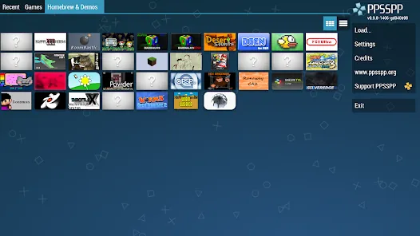
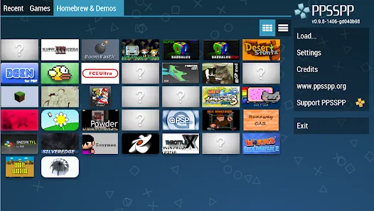

PPSSPP hakkında
PPSSPP, PSP oyunlarını destekleyen bir emülatördür. İndirdiğin paketin sistemine uygun olduğundan emin ol.



Naruto Shippuden: Ultimate Ninja Impact oyununa da oyun sayfasından ulaşabilirsin.
PSP oyunları için emülatör. Windows, Linux veya macOS sürümünü seçerek indirme bağlantısını aç.

PPSSPP, PSP oyunlarını destekleyen bir emülatördür. İndirdiğin paketin sistemine uygun olduğundan emin ol.



Naruto Shippuden: Ultimate Ninja Impact oyununa da oyun sayfasından ulaşabilirsin.